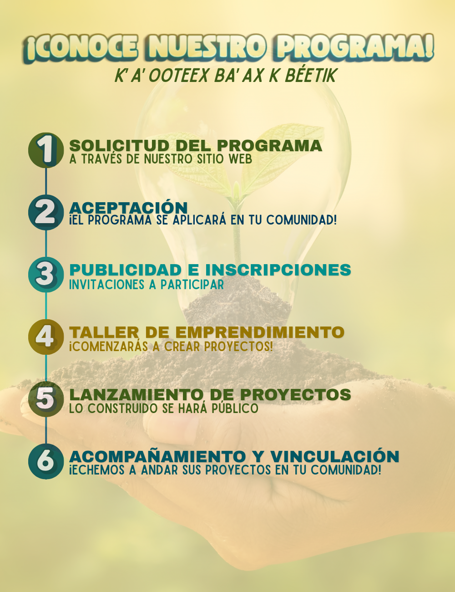

Transforma tu idea en un proyecto para tu comunidad
En KO'OX LÍIK'IL te damos el acompañamiento que necesitas para desarrollar tus habilidades y emprender el vuelo.
¡Inicia tu Proyecto!¿Qué es KO'OX LÍIK'IL?
Somos un programa de apoyo para jóvenes en comunidades de Yucatán para grandes ideas. Sabemos que a veces falta conocimiento, recursos o una guía para empezar. Nuestro propósito es ser ese acompañante en tu viaje.
Te ayudamos a diagnosticar problemas, a validar tu idea, a buscar aliados clave en tu comunidad y a encontrar los recursos para hacer realidad tu proyecto. ¡Estamos aquí para impulsar tu talento!

Nuestro Proceso de Acompañamiento
¿Tienes una idea? ¡Es tu momento!
Visita nuestra sección de recursos para encontrar el formulario de postulación y las guías que te ayudarán a empezar.
Ver Recursos